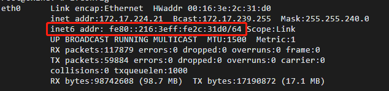

使阿里云服务器支持ipv6
App Store的游戏上线需要支持ipv6。我这里使用的是阿里云学生服务器，便宜好用，怎么折腾都不心疼，服务器OS为Ubuntu16.04LTS。顺带一提阿里云有直接支持IPV6并分配了公网IP的服务器，不过价格嘛……
1.开启ipv6
阿里云的ipv6默认关闭，首先打开linux服务器的ipv6功能
vim /etc/sysctl.conf
修改以下三行
1 | |
重启网络，这时执行ifconfig就能看到网卡的ipv6的IP了。

测试的话，可以自己ping6一下自己，或者ping6一下 ipv6.baidu.com 或者 he.net(或者用桌面版浏览器访问)。如果自己能ping通，v6的域名ping6不通，多半是dns有问题，试着直接ping地址。
我们可以写一下DNS
vim /etc/resolv.conf
阿里：
1 | |
谷歌：
1 | |
github上好用的ipv6 host表
https://github.com/lennylxx/ipv6-hosts
2.搭建隧道
咱普通人还是搞不到IPV6的固定公网IP的（蹭学校的IP除外）。但为了能从外网访问，我们需要一个IPV6的公网IP，这里我选择了he.net旗下的 tunnelbroker，架设免费的6in4隧道。
下面是wiki上关于he的介绍
Hurricane Electric是一家位于美国的全球互联网服务提供商。该公司提供IPv4和IPv6接入以及位于美国圣荷西（公司总部地址）的数据中心服务。该公司运营了世界上以对等数目计算的最大IPv6网络。其中大多数是原生IPv6对等会话。该公司也提供免费IPv6隧穿服务，为IPv4用户或无法接入IPv6网络的用户通过隧道提供IPv6服务。该公司提供了针对IPv6教育及培训的证书。
这里我ping了一下，选择了新加坡的节点，可以看到he.net的server v4 与 v6 地址，我们试着从服务器ping一下
可以看到连接稳定
然后我们新建网卡用于我们的6in4隧道
/etc/network/interfaces
加入以下内容，注册网卡，<>内的内容根据你的实际情况变化
1 | |
重启网络后，可以亲切的看到我们的新网卡：
3.搭建nginx服务器
我从nginx官网下载的当时为最新版的nginx1.19.3的tar.gz文件。然后tar -zxvf unzip一下。之后就是配置参数和编译了。我们需要和ipv6和https模块。
1 | |
它提示我新版nginx自带v6模块，不用再--with-ipv6了。
然后我们配置一下nginx.conf, 监听一下ipv6的80端口。
1 | |
修改如下
1 | |
最后记得去阿里云安全组（类似端口防火墙）里面，把80和443（之后要用）出入站规则打开
4.从任意支持v6的设备使用ipv6地址访问
我把自己博客的域名拆过来，临时绑个AAAA，绑上了he.net分配给我server的ipv6地址
测试 http://ipv6-test.com/validate.php
直接通过http://[IPV6 HOST]的方式访问或使用域名访问
一个小问题：
后来我发现时不时的从外网ping主机v6ping不通，ping he的server却能ping通，即：
1 | |
即he.net与我的阿里服务器的连接断了，我尝试从阿里云的服务器ping
1 | |
而且一旦尝试从服务器去ping he的v6 server后，从外网又能ping通了。说明 2001:470:35:81a::1 到我的服务器的线路又通了。我猜测一段时间我服务器没有往he发包的话，隧道会处于不活跃状态而关闭，于是暴力解之：隔1分钟ping一下
1 | |
现在连接就稳定多了。（不过服务器毕竟在海外，还是偶尔会抽风ORZ）
使阿里云服务器支持ipv6